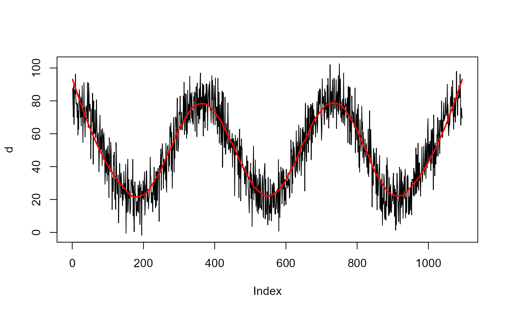

Imputes missing data or smooths using Loess regression
impute.loess(y, s = 0.2, smooth = FALSE)
| y | A vector to impute |
|---|---|
| s | Smoothing parameter () |
| smooth | (FALSE/TRUE) Smooth data, else only replace NA's |
a vector the same length as x with NA values filled or the data smoothed (or both)..
Performs a local polynomial regression to smooth data or to impute NA values. The minimal number of non-NA observations to reliably impute/smooth values is 6. There is not a reliably way to impute NA's on the tails of the distributions so if the missing data is in the first or last position of the vector it will remain NA. Please note that smooth needs to be TRUE to return a smoothed vector, else only NA's will be imputed.
Jeffrey S. Evans <jeffrey_evans<at>tnc.org>
#> [1] 87.61745 80.08615 70.13594 89.23702 65.68060 80.66715 86.65686 84.05541 #> [9] 96.27546 81.93139 78.06869 79.05159 76.90005 69.75408 78.38091 59.14256 #> [17] 73.86546 62.63936 82.15718 86.86729 80.23530 74.76159 69.93820 82.40252 #> [25] 64.75957 81.26573 70.31412 89.34390 73.48171 54.58826 73.81009 71.95086 #> [33] 91.05748 66.60895 76.05599 57.98618 70.99730 70.60337 NA 75.26827 #> [41] 73.34043 69.21236 NA 75.08785 63.78449 90.78814 NA 75.63060 #> [49] 73.70614 77.90087 74.57579 44.79193 62.58251 64.89318 NA 67.52770 #> [57] 84.62922 NA 41.49293 80.02723 60.41935 60.05610 60.65554 74.51359 #> [65] 59.25159 57.45409 62.92252 80.66462 67.96344 57.25753 53.53333 58.63869 #> [73] 60.51485 54.01235 36.75463 47.65506 63.12981 71.27695 48.95032 58.09722 #> [81] 50.55329 62.40145 53.85463 40.63198 63.21155 58.58662 58.85516 44.09691 #> [89] 60.60068 53.71325 47.89729 29.28080 37.94532 49.92611 36.25262 50.79350 #> [97] 44.89025 31.19227 48.93499 52.58795impute.loess(d, s=0.2)#> [1] 87.61745 80.08615 70.13594 89.23702 65.68060 80.66715 86.65686 84.05541 #> [9] 96.27546 81.93139 78.06869 79.05159 76.90005 69.75408 78.38091 59.14256 #> [17] 73.86546 62.63936 82.15718 86.86729 80.23530 74.76159 69.93820 82.40252 #> [25] 64.75957 81.26573 70.31412 89.34390 73.48171 54.58826 73.81009 71.95086 #> [33] 91.05748 66.60895 76.05599 57.98618 70.99730 70.60337 70.35235 75.26827 #> [41] 73.34043 69.21236 74.98894 75.08785 63.78449 90.78814 73.92605 75.63060 #> [49] 73.70614 77.90087 74.57579 44.79193 62.58251 64.89318 64.77459 67.52770 #> [57] 84.62922 65.88539 41.49293 80.02723 60.41935 60.05610 60.65554 74.51359 #> [65] 59.25159 57.45409 62.92252 80.66462 67.96344 57.25753 53.53333 58.63869 #> [73] 60.51485 54.01235 36.75463 47.65506 63.12981 71.27695 48.95032 58.09722 #> [81] 50.55329 62.40145 53.85463 40.63198 63.21155 58.58662 58.85516 44.09691 #> [89] 60.60068 53.71325 47.89729 29.28080 37.94532 49.92611 36.25262 50.79350 #> [97] 44.89025 31.19227 48.93499 52.58795